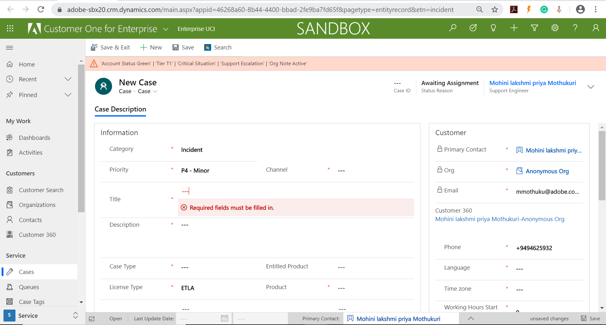

<p style="font-size:12px;font-family:'Segoe UI','Helvetica Neue',sans-serif;"><br>
testing</p>

<h1 style="font-size:12px;font-family:&quot;Segoe UI&quot;, &quot;Helvetica Neue&quot;, sans-serif;">Creating and Testing MS Flow</h1>


